|
2010年夏天西藏行（青藏线和318国道川藏南线）图片日记
day1,2010年7月17日
长沙 - 常德市澧县
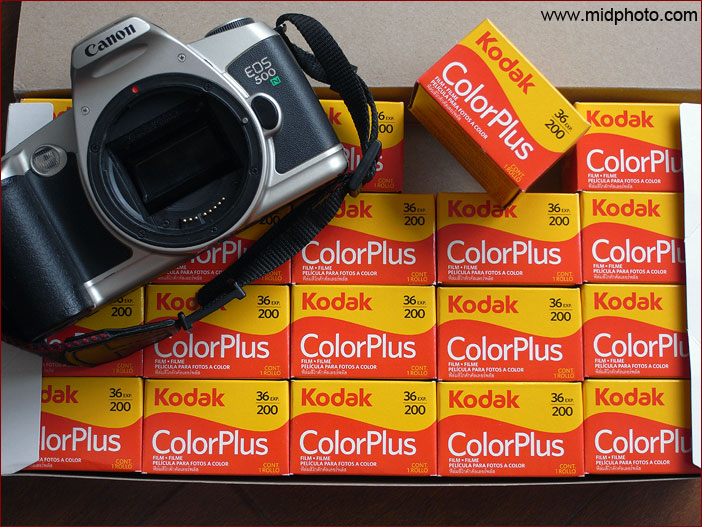
day1。我卖掉了佳能1ds Mark
II，但还没来得及买新的专业机器，临时弄了个宾得（Pentax）KX套机（18-55镜头），口袋里还有一个理光GX100。另外我把尘封多年的佳能最便宜的胶片单反EOS500N又翻了出来备用。拍胶卷和拍数码的感觉完全不一样啊，这机子曾经伴随我登上海拔7546米的慕士塔格峰，可靠性不容置疑。器材不在乎好，可靠性永远第一重要。
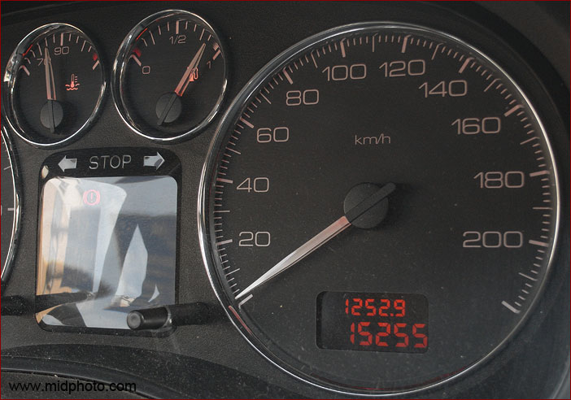
这是2010年7月17日早上8点半，出发里程15255公里，长沙阳光100小区
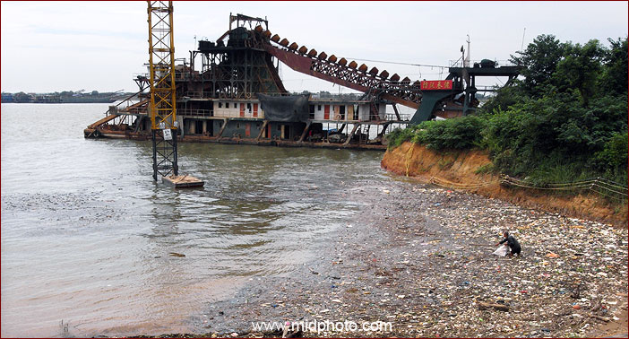
湘阴县附近的湘江河面，拾荒者。涨大水，船厂的塔吊都被淹了。挖沙船红牌子上写着：防汛三号。半年前我曾驾车绕洞庭湖一圈，此次我也选择了旧路，但只有一天时间匆匆而过，当晚即到达澧县。总体印象：冬季枯水岌岌可危的洞庭湖在夏季洪水季节重新又变成了汪洋大湖。有兴趣可访问我的环洞庭湖专题（含静物、人物、建筑等15个小专题）。
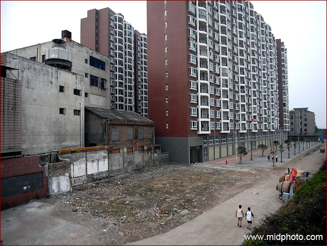
7月17日下午5点到达湖南津市市，我的老家。这是澧水河边的望江广场。下面这张图片是1月份拍的，对比可以看到老望江楼已被拆除。

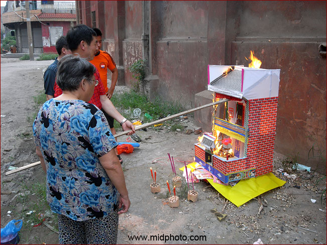
津市市街头。烧祭品给女儿的大妈
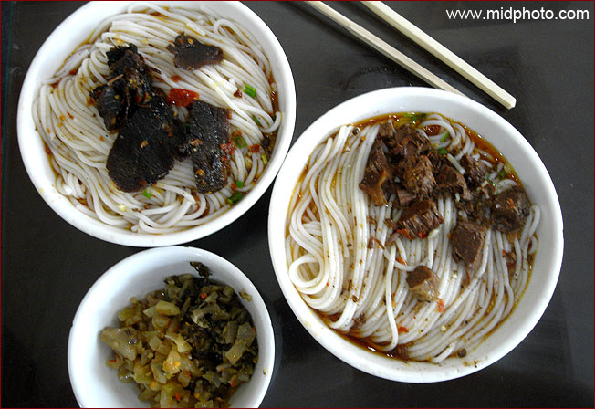
津市的贺记牛肉米粉依然是我的最爱
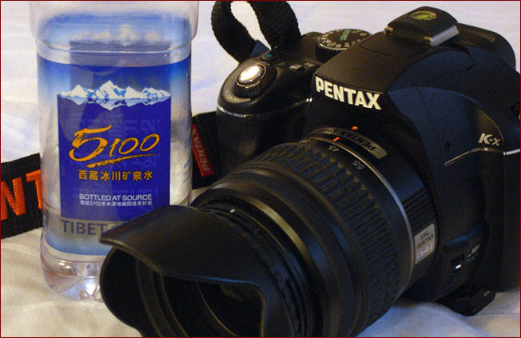
7月17日当天跑了四百公里（绕了点远路）。我没有在津市停留，直接杀到了澧县，入住三星级的澧县城头山大酒店。在酒店房间我百无聊赖拍了这张相机和矿泉水。曾经计划了很久横穿西藏的视频拍摄，我甚至带上了备用油箱准备穿越阿里，但因为我的犹豫不决以及其他各种原因，此次出行变成了散心和避暑之旅。虽然如此，但目的地依然不变，我要以最快速度争取8月1日之前赶到拉萨。
day2,2010年7月18日
常德市澧县 - 湖北省巴东县野三关镇
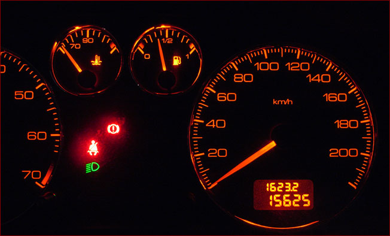
7月18日早上澧县出发时的里程表15625公里。
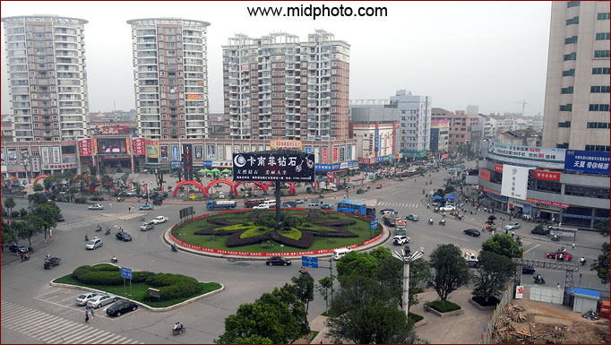
这是从城头山酒店往下拍的澧县。曾经的小镇现在已是高楼林立
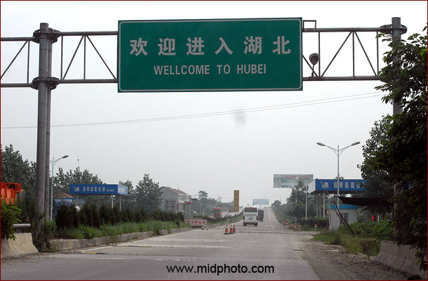
上午10点20进入湖北省，公安县境内
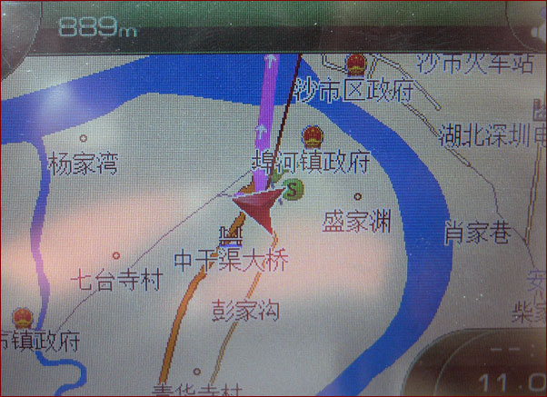
中午12点，GPS显示前面就是长江
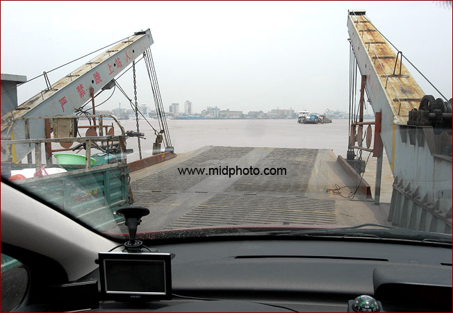
我选择了最原始也是最便宜的过江方式 - 汽车轮渡
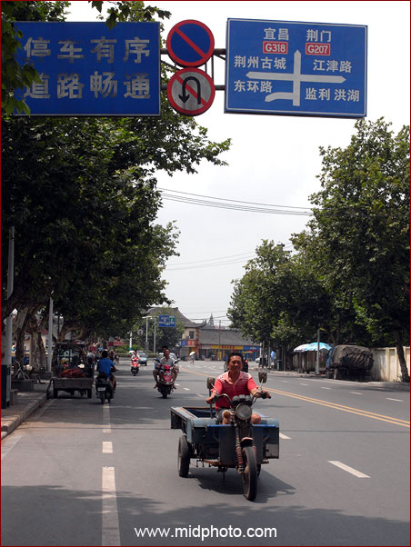
下午1点半，终于在荆州第一次看到318国道路牌，沿着318一路向西就是拉萨
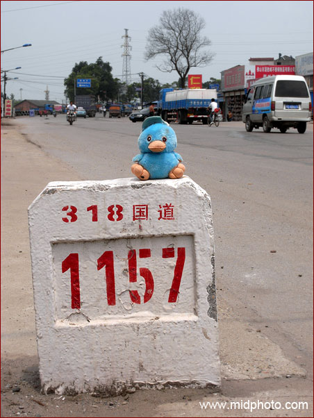
也终于第一次看到318国道的里程碑，意味着这儿离上海人民广场1157公里。唉，318国道项目是我多年的心病。2002年5月我在西藏拉孜县第一次看到318国道的5000公里纪念碑就觉得这是一个绝好的人文和风光摄影题材，从最繁华的上海到最荒凉的西藏。可惜我一贯拖拖拉拉。2006年发现成都摄影师骆丹已经独自完成了318项目，而且拍摄风格和我颇为类似。骆丹的318专题获得了连州国际摄影节唯一金奖。我不能再走别人的老路，我得从视频方面想办法，图片也得另走新路。现在我初步计划骑单车走318，视频小组在后面开车跟拍。但这次，这个暑假，也只能是为这个项目踩点兼探路了。
顺便隆重推出我这次318散心之旅的吉祥物
- 委屈的蓝色鸭子。这只鸭子是1990年买的，一块八毛钱，已经20岁了，一直伴随在我身边。希望它能保佑我这次万里征途一路顺风，smooth
journey home.
这是2002年5月我在西藏拉孜县拍摄的318国道5000公里碑。现在这个旧碑早已被新的大型纪念碑所替代，这张图片变成了历史纪念了，呵呵
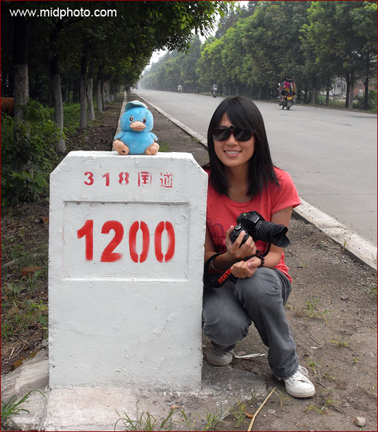
很快就来到了1200公里路碑。曝光一下美女小言，接下来我们要一路到拉萨，还有3400公里。
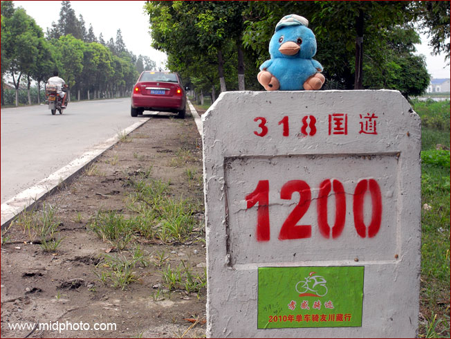
在这里也第一次看到了骑单车去西藏的自行车爱好者留下的痕迹（孝感骑迹车队）
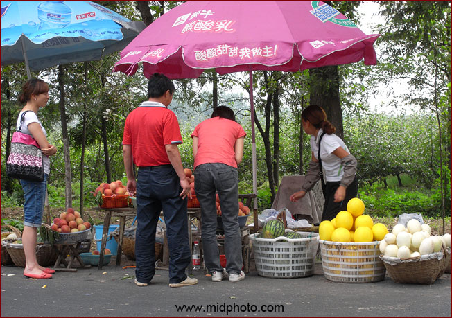
路边摊是随处可见的公路现象。我们在这里买了一堆带水果上车，一直到西藏才最后干完
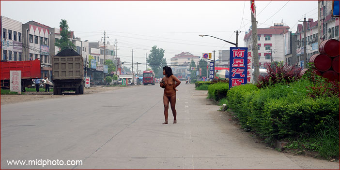
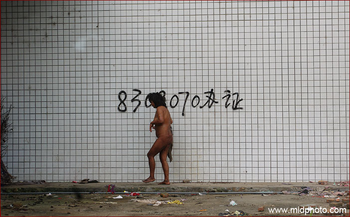
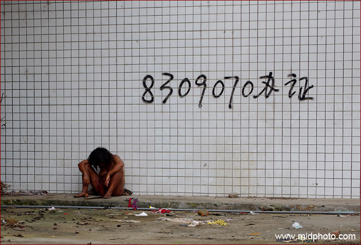
下午两点半在枝江市郊看到一个赤身裸体的女人，明显是有精神疾病的流浪者。她在公路上非常醒目，但在我拍摄的几分钟里没有任何人注意她。人群是相当麻木的。公路流浪者在中国非常普遍，高速公路、国道、省道乃至乡村公路上都随处可见。最底层公民得不到起码的照顾，这是国家的耻辱。
当然，有警车鸣锣开道的官员们是不会知道他们的。也不要指望地方，有地方民政局官员曾经干过把生病的流浪者带上车，不去救助而是扔到隔壁县了事，造成流浪者直接死亡。更有甚者，小煤矿和砖窑的黑心老板们甚至拐骗这些智障流浪人为奴役。中国社会正在失去起码的道德底线。
我不知道地方民政局救助中心都在干什么？我不知道地方志愿者组织都在干什么？为什么很多敬老院一到节假日就有那么多人去照看，而最需要帮助的人群却无人理睬？为什么我们可以关心流浪的猫和狗，而流浪的人却无人理睬？
虽然我拍过不少流浪人，但在拍这几张图片的时候我是非常难受的，因为那个女人下身明显看出是在流血，不知道她是有病还是例假。惨。。。我甚至想掏出电话通知警察局或枝江市民政局。当小言问杨飞你真的要管吗？我最后还是没有打。我真的非常伤心和矛盾，我知道接下来的路上还不断会有流浪者出现，难道要我来一个一个救助？我的行程，时间和精力都不允许我这样做。
但是，把这个场面记录下来是一个摄影师的职责。这是人权与尊严的拷问，以及起码的人性与道德底线。
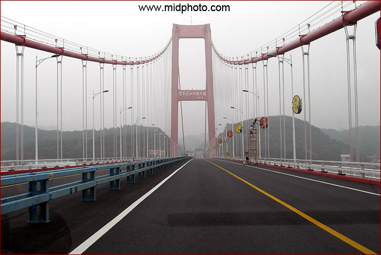
下午四点经过湖北宜昌，再次过长江。这是宜昌长江公路大桥。我在这里不小心拐上了高速公路
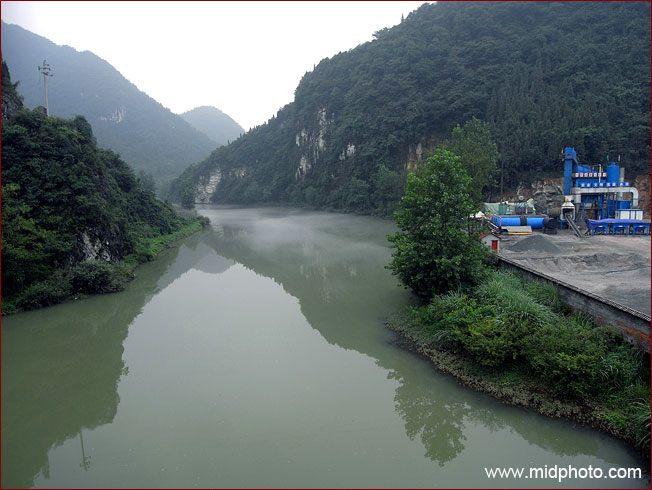
我很快就从下了高速，进入湖北长阳县。318国道长阳段我只有四个字来形容：风景如画。但就在这如画的美景中，公路段的碎石厂是一个扎眼的污点。我们无疑是大自然的破坏者，但是，要没有这些破坏，公路又从何来呢？318国道又从何而来呢？我们当然不可能回到马车时代，但对自然的索取和破坏需要一个什么样的度？
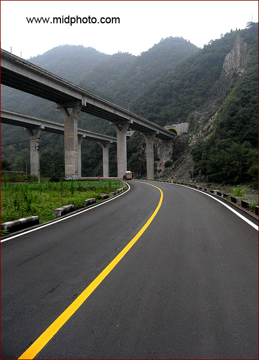
长阳县。崇山峻岭中的高速公路和路况良好的318国道
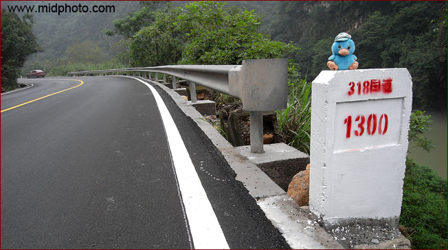
1300公里
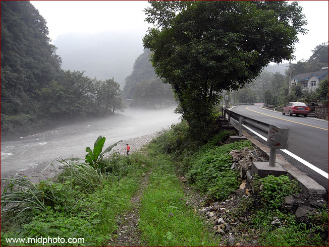
318国道，长阳县
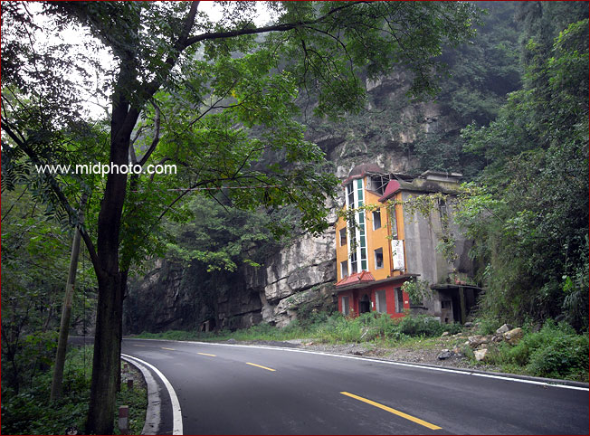
山水如画但开发旅游失败，这是一个被废弃的旅游饭店
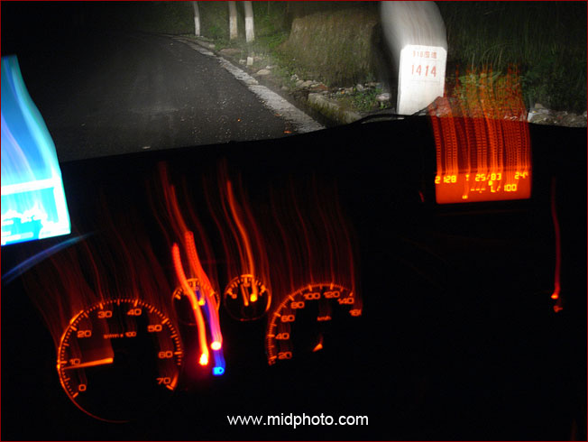
下定决心要在8月1日之前赶到拉萨，我开始连续作战赶夜路。1414公里碑。
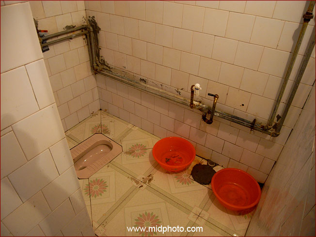
晚上十点赶到湖北巴东县野三关镇，实在干不动了。这里离巴东或建始县城都还有好几十公里，这两个县城都不在318国道上。我只得在镇上的小旅馆住下，号称标间，只要40元，但条件接近恐怖，呵呵。
day3,2010年7月19日
湖北省巴东县野三关镇 - 重庆万州市
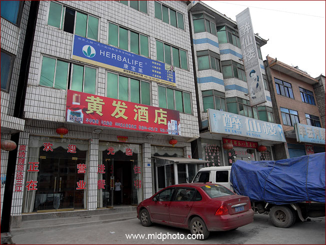
这就是昨晚入住的路边店，野三关黄发酒店。住店客人还要收十块钱停车费，唉
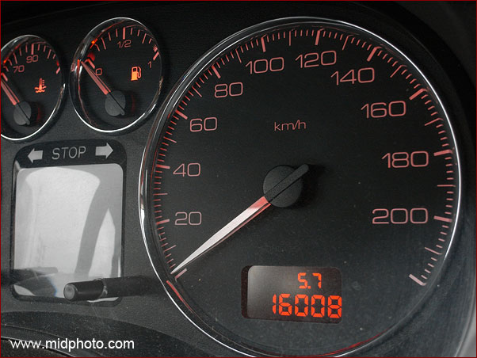
两天跑了750公里，基本全程国道
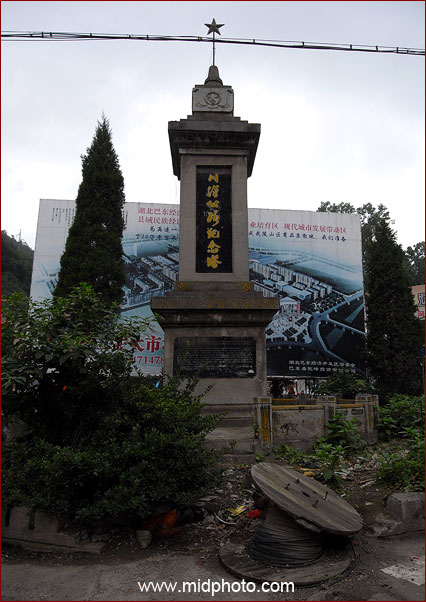
野三关镇川汉公路纪念碑
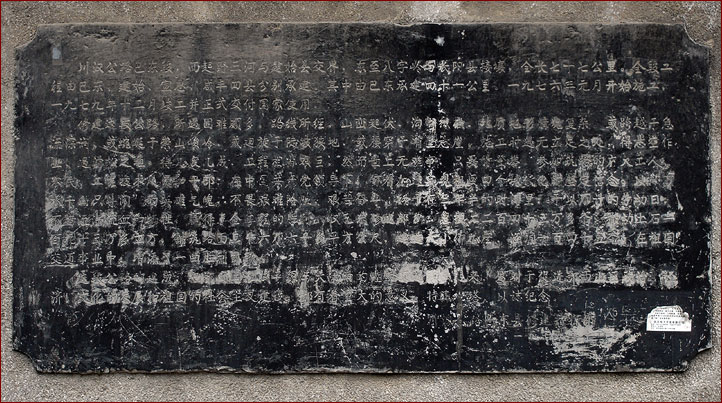
这是纪念碑文。1979年建成的川汉公路属318国道的一部分，工程艰巨，穿越崇山峻岭，连接湖北和四川
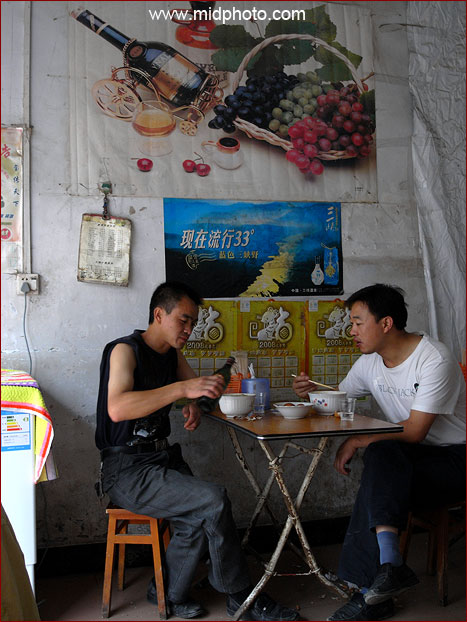
在镇上的小店吃早饭
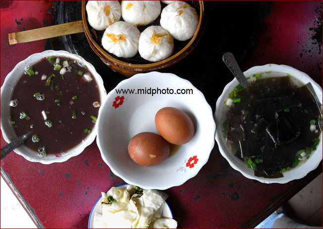
红豆粥，海带汤，鸡蛋，酸白菜，小笼包，一顿便宜美味的早餐
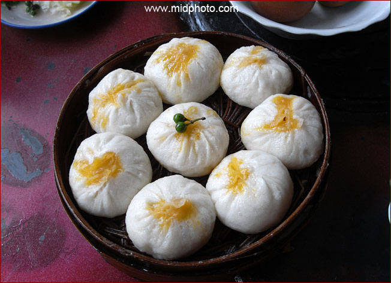
小笼包上面有貌似樟树果实的小东西，挺香的
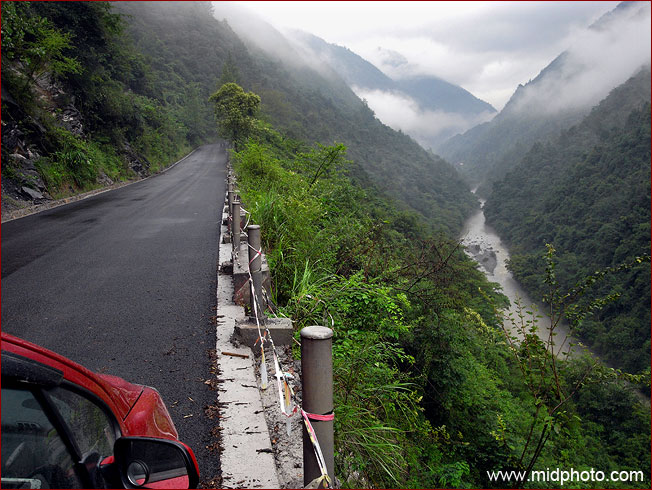
318国道美景如画。这里应该属于恩施市建始县和巴东县交界处
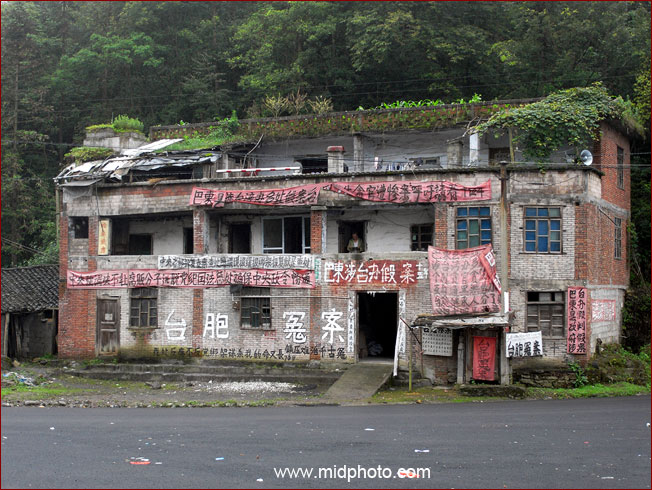
风景如画，但这个房子不太和谐
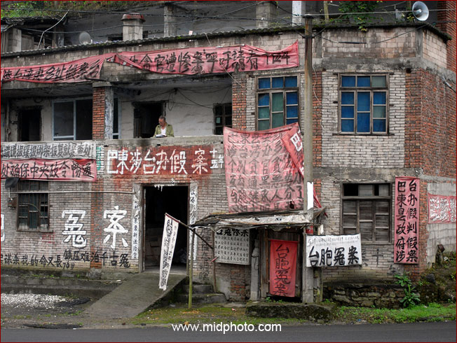
有人控告巴东县涉台办
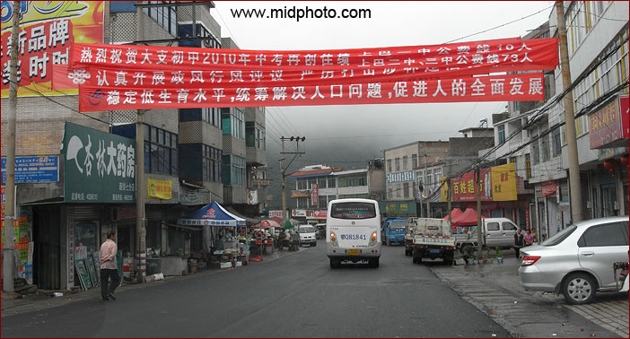
巴东县大支坪镇
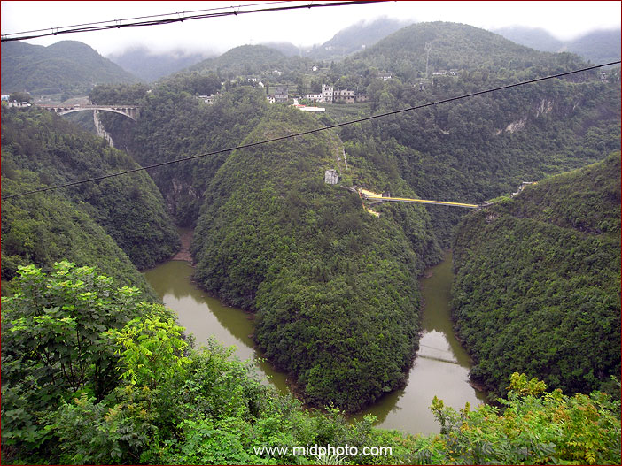
从这个角度看川汉公路确实不容易啊，左上角的拱桥就是318国道。这是巴东县大支坪镇附近
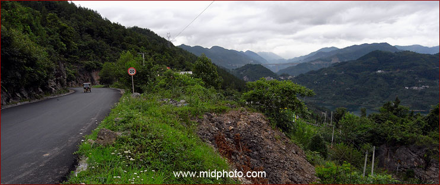
忧郁的318国道
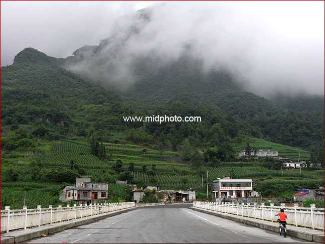
甘泉大桥。318国道巴东县。
忧郁的318国道，之二
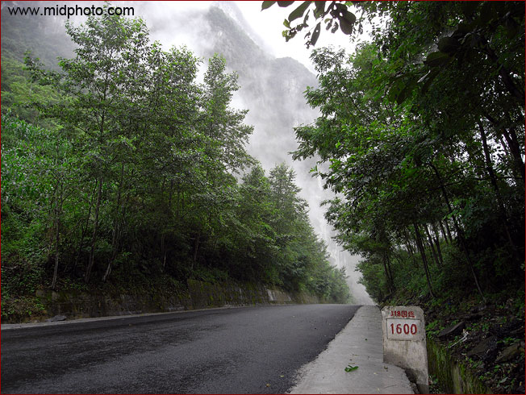
1600公里碑到了
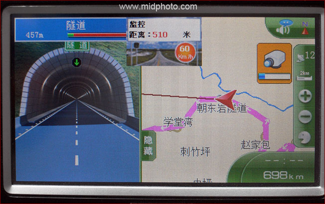
前面就是著名的朝东岩隧道
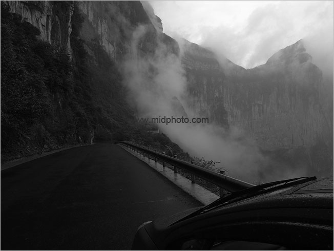
忧郁的318国道，之三，朝东岩隧道
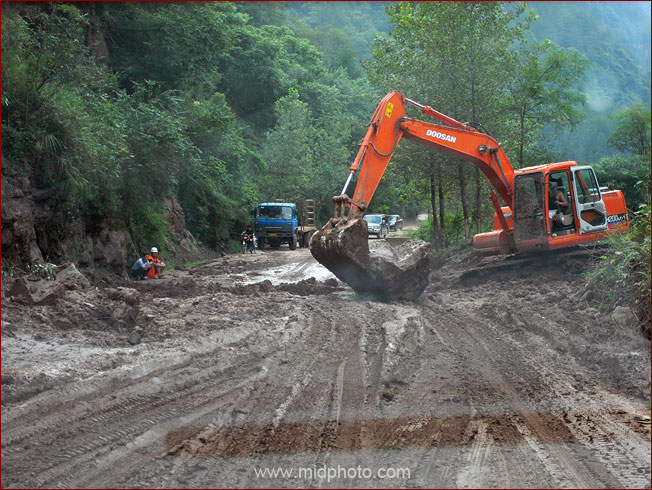
下午5点50，遭遇第一次道路塌方。湖北恩施州
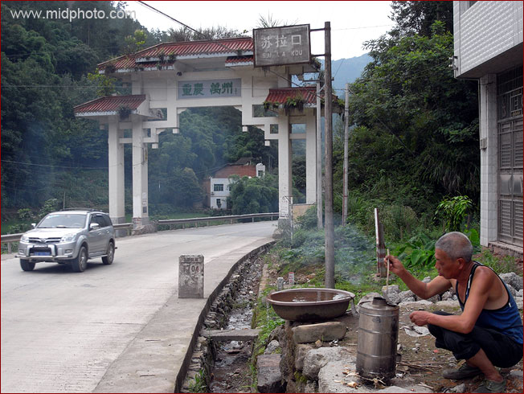
下午六点，离开湖北进入重庆万州辖区。此地名曰苏拉口。
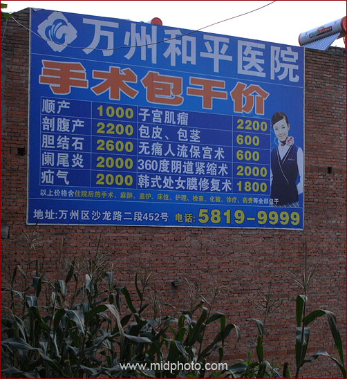
万州和平医院价格表
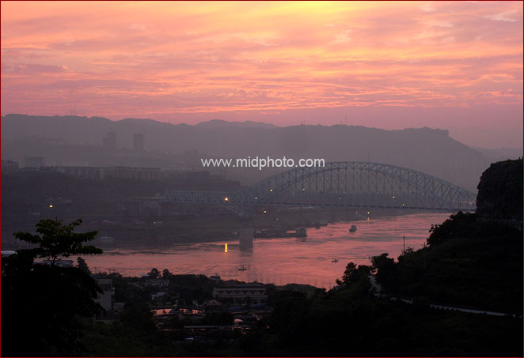
19:50到达万州市区，这是长江大桥
住万州医药大酒店。在酒店旁边找了个家常菜吃。
冰冻山城啤酒，麻婆豆腐，爽
day4,2010年7月20日
重庆万州市 - 四川省成都市
昨天一天只跑了350公里，按这个走走拍拍的速度两天也跑不到成都啊。小言需要在8月5日之前回到南宁，因为有一个重要的工作面试。这意味着必须在8月2号之前赶到拉萨。我不得已决定放弃走318国道，走高速公路争取今天下午就赶到成都。
过隧道。一路高速狂奔。
下午6点20，终于到达成都。在高速出口还领到了一张环保标志。
成都，大城市啊
大城市，好复杂
住在宽巷子附近的长生源快捷酒店。就在长生源酒店吃饭。好辣的鱼。
宽巷子已经是昨天的记忆，只存在于老照片里面了
成都宽巷子
成都窄巷子
成都窄巷子2
成都窄巷子茶座
成都宽巷子星巴克
|